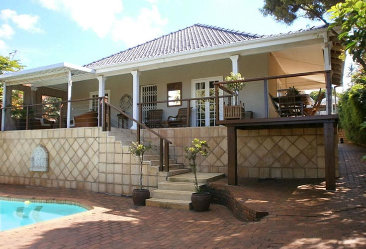

Villa Coco Guesthouse
Villa Coco is a lovely guesthouse in Durban North and ideally situated for all of Durban’s fantastic attractions. Convenient for both business and tourism, Durban Country Club, Moses Mabhida, and Kings Park rugby stadiums are close by, while Durban CBD and the ICC are an easy trip into the city, with restaurants and shops minutes away in the vibrant Broadway area. Suncoast Casino complex, with it's safe swimming beach is only 3km away.
Villa Coco is owned and run by Shawn & Michelle with that "home-away from home" feeling. The guesthouse comprises of three freestanding units which are accessed off High Ridge road, and the Main House (consisting of four rooms) is accessible via Kelvin Place. There is off-street parking for seven vehicles.
